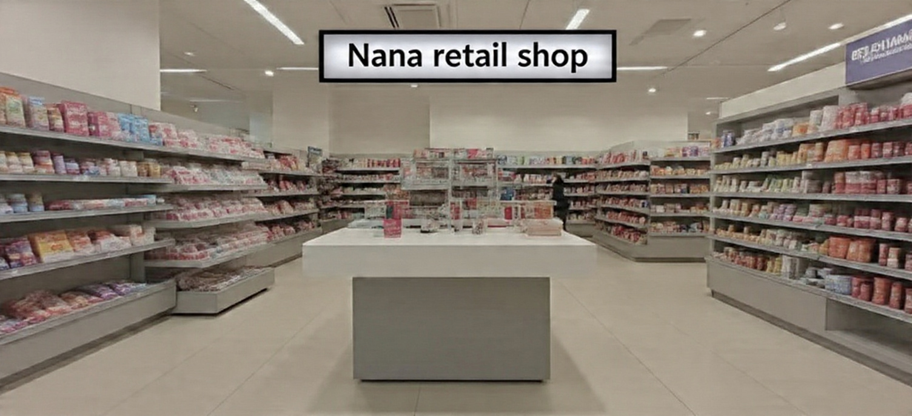

Personal InformationA motivated and detail-oriented aspiring software developer with a strong foundation in programming and problem-solving. Passionate about building user- friendly applications and continuously learning new technologies. Skilled in developing small-scale applications and eager to contribute to real-world software solutions while growing in a dynamic tech environment.
To build a successful career in software development by gaining hands-on experience,contributing to impactful projects, and continuously improving my technical and problem-solving skills in a collaborative environment.
[Certificate/Diploma/Degree/Program] - [YMS](2000-2025)
Relevant Coursework: Programming, Database systems, Web Development